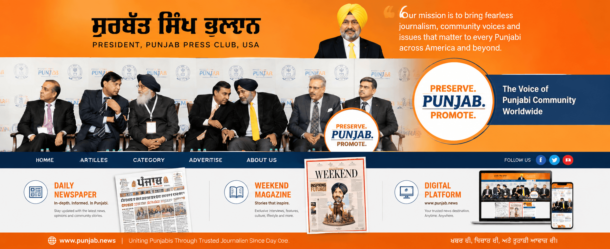
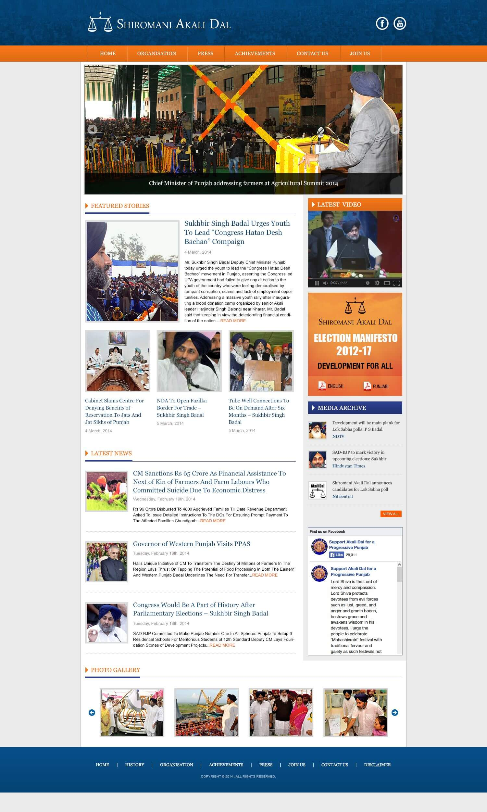
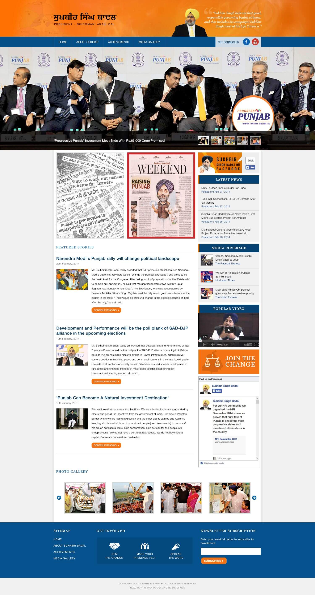

News cycles, criticism and competing narratives required continuous monitoring and timely coordination.
← Back to workA political presence.
Shiromani Akali Dal · 2014 Digital Campaign
A political presence.
Built for the digital public square.

Project overview
Campaign information.
Connected across channels.
Ahead of the 2014 Lok Sabha election, the party needed a more coordinated digital presence for news, speeches, achievements and public-facing updates.
Mad Men supported the campaign through website publishing, social communication and online reputation monitoring across Facebook and Twitter.
- Election
- Lok Sabha 2014
- Scope
- Digital Communication
- Channels
- Web + Social
- Operation
- Monitoring + Response
The challenge
Communicate at speed.
Maintain clarity under scrutiny.
Speeches, press updates, public programmes and campaign material needed one organised publishing system.
The digital system
Listen. Publish.
Respond. Repeat.
A structured workflow connected issue monitoring with verified campaign content, allowing the team to maintain a consistent public record across digital channels.
- 01
Monitor
Track public conversation, news coverage and emerging issues.
- 02
Verify
Coordinate facts, approved information and response priorities.
- 03
Publish
Distribute timely updates through web and social platforms.
- 04
Engage
Maintain an active channel for public-facing campaign communication.
The owned platforms
Two destinations.
One connected narrative.
The digital ecosystem organised party updates and leader communication into clear editorial destinations supported by video, press coverage, galleries and social integration.


Content architecture
A public record.
Designed to stay current.
News and press
Timely updates gave campaign developments a consistent home.
Speeches and video
Multimedia made campaign activity accessible beyond physical events.
Achievements
Structured pages organised the party’s stated record and programme information.
Social connection
Facebook and Twitter extended publishing into active public conversation.
Campaign operations
Always-on attention.
Disciplined communication.
Online reputation work was treated as an operational discipline: identify issues early, establish the relevant facts, coordinate an appropriate response and maintain consistent messaging across every active channel.
- Conversation and media monitoring
- Editorial planning and rapid publishing
- Issue-response coordination
- Cross-platform message consistency
The recorded result
A sustained digital presence.
Four seats in Punjab.
The campaign established a coordinated online presence during the 2014 election period. Official Election Commission data records four Lok Sabha seats and 26.37% of valid votes in Punjab for Shiromani Akali Dal.
4 seats
Seats won by SAD in Punjab in the 2014 Lok Sabha election.
26.37%
Share of valid votes polled by the party in Punjab.
Connected publishing
Web and social channels worked as one campaign information system.
A campaign archive.A continuous public channel.
Have a complex story to organise?